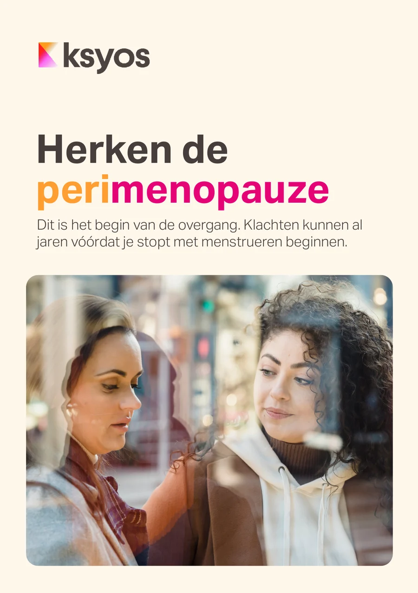
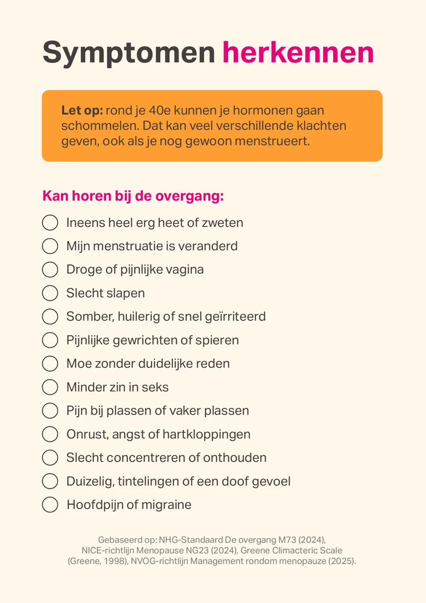
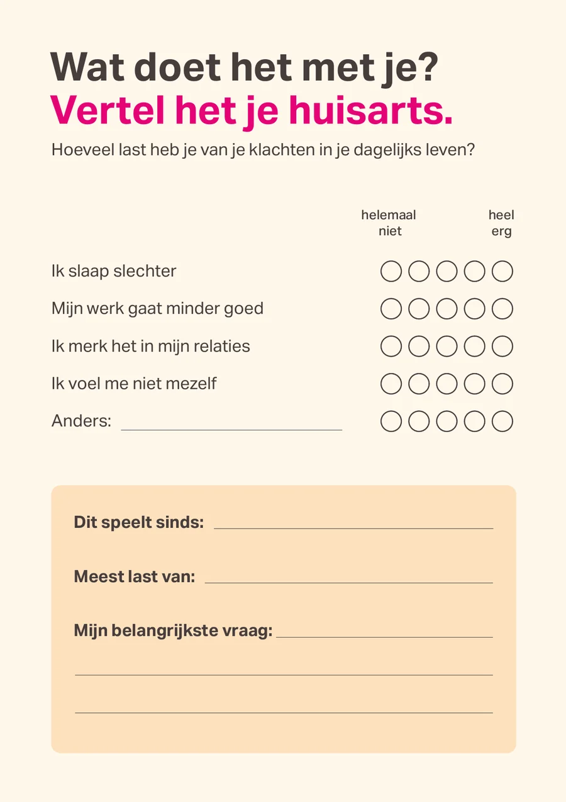
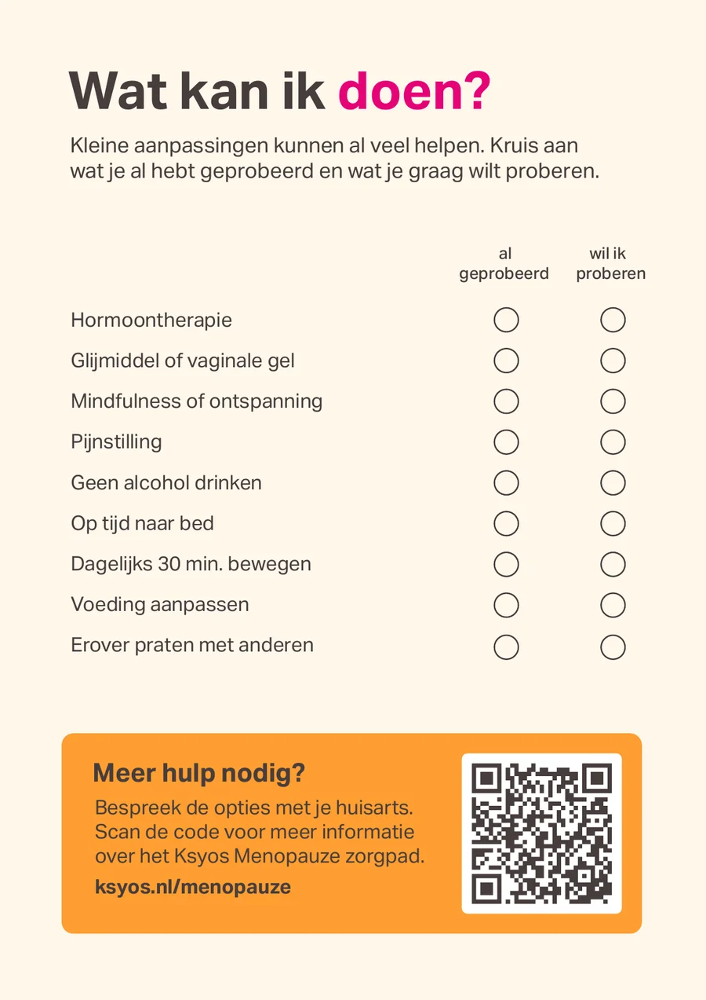
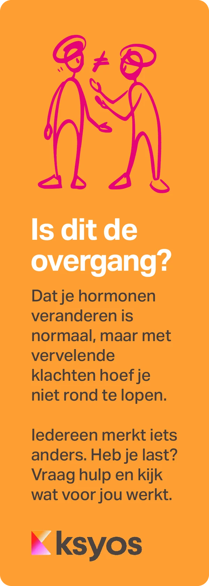
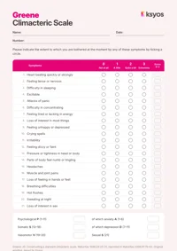

From around the age of 40, your hormones can start to fluctuate. This can cause many different symptoms, even while you still have regular periods.
It can be hard to know where to start, or what to discuss with your GP. That is why we made a few clear tools: a fan, a card to prepare your appointment and a questionnaire. Read up in advance, or print them.
The fan, the card and the printable files are currently available in Dutch only.
Each blade covers a different part of your body. Tap a blade to see it large. Curious what you can do yourself? Turn the fan over for tips.
Want to be well prepared? Leaf through the card and tick what you notice, what it does to you and what you want to ask. Write it down, so you don’t forget anything and keep an overview during the conversation.




This questionnaire is used worldwide to measure menopausal symptoms. It helps you see which symptoms you have and how much they bother you. For each symptom, indicate how much it bothers you at the moment. Done? Make a PDF and take it to your GP.
Greene Climacteric Scale (Greene, 1998), original English wording.
Useful to fill in and take to your GP. The fan and the card are in Dutch; the questionnaire is in English.


Tip: print in colour. Each sheet of the fan explains how to put it together.